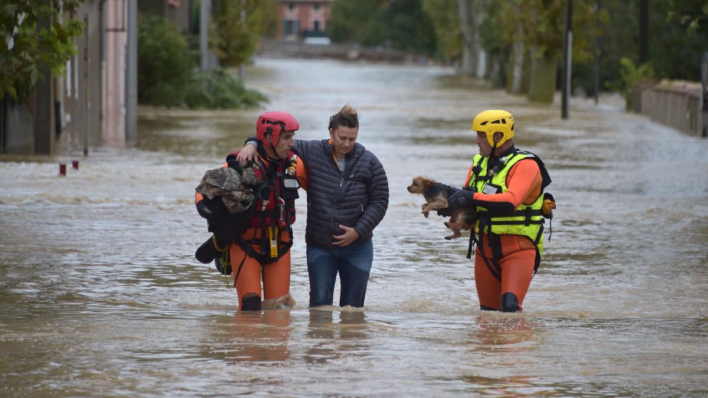

Safe and efficient transportation and commerce.
Ships move $1.5 trillion worth of products in and out of U.S. ports every year. Every ship moving in and out of U.S. ports relies on navigation charts and water level information that NOS alone provides. All mapping, charting, and transportation activities and infrastructure are founded on a reliable, accurate national coordinate system. NOS is solely responsible for maintaining that system, which provides more than $2.4 billion in potential annual benefits to the U.S. economy. Businesses in the maritime community rely on NOS for a range of decisions, from how much cargo to load to choosing the safest and most efficient route between two points. They use NOS data, tools, and services to plan seasonally for ship schedules to service global trade more safely and efficiently as significantly larger vessels transit through U.S. ports as a result of the Panama Canal expansion.The National Ocean Service provides data, tools, and services that support coastal economies and their contribution to the national economy. NOS is dedicated to advancing the following priorities:

Preparedness and risk reduction.
Coastal communities represent a major economic engine for the United States. Immediate and potentially life-threatening events such as hurricanes, as well as long-term issues like high tide flooding, are real challenges to coastal communities. NOS brings a unique range of information and capabilities to help communities prepare for, respond to, and recover from these events. For example, NOS maintains the nation's network of coastal tide and water level sensors to provide real-time data that supports accurate weather forecasts, coastal storm and flood predictions, and tsunami warnings. NOS provides data and tools that enable businesses and coastal communities to better plan for and mitigate risk from changing conditions. The agency provides information and data to protect human health and coastal economies with early warnings of harmful algal blooms and other threats. Every year, NOS responds to natural disasters and more than 150 oil and chemical spills in U.S. and state waters, which damage environments and disrupt economies. As the authoritative resource for science related to marine debris, oil, and chemical spills, NOS provides responders with the information they need to understand the severity of a spill and where it will travel.
Stewardship, recreation, and tourism.
The United States boasts some of the most important natural, cultural, and historical resources in the world—not just on land but under the water as well. The value of the U.S. coastal tourism and recreation industry in 2009 was $62 billion. NOS plays a critical role in protecting and promoting access to these special coastal and marine places. NOS is entrusted with the responsibility to manage a network of underwater parks encompassing more than 600,000 square miles of coastal, marine, and Great Lakes waters. Across all national marine sanctuaries, about $8 billion annually is generated in local economies from activities like commercial fishing, tourism, and recreation. NOS also partners with states to manage national estuarine research reserves, a network of 29 coastal sites designated to protect and study estuarine systems. The reserves reflect the rich diversity of environments along our coasts and Great Lakes, and provide places for education, recreation, and boosting local economies.